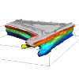

Publications and presentations on development and applications of Open Source GIS
Peer-reviewed journals
-

Tateosian L., Mitasova, H., Thakur S., Hardin E., Russ E., Bundell B. 2013, Visualizations of Coastal Terrain Time-series, Information Visualization, DOI: 10.1177/1473871613487086
-
Lyons, N.J., Mitasova, H., Wegmann K.W., 2013, Improving mass-wasting inventories of debris flow-dominated channels in non-glaciated terrains, Landslides, DOI 10.1007/s10346-013-0398-0
-
Mitasova H., Hofierka, J., Harmon R.S., Barton M.C., Ullah, I., 2013, GIS-based Soil Erosion Modeling, In: Shroder, J. (Editor in Chief), Bishop, M.P. (Ed.), Treatise on Geomorphology. Academic Press, San Diego, CA, vol. 3, Remote Sensing and GIScience in Geomorphology, pp. 228–258.
-

Starek, M.J., Mitasova H., Wegmann, K, Lyons, N., 2013, Space-Time Cube Representation of Stream Bank Evolution Mapped by Terrestrial Laser Scanning, IEEE Geoscience and Remote Sensing Letters PP(99), DOI 10.1109/LGRS.2013.2241730
-
Paris P.J., Hardin E., Mitasova H., Starek M.J., Kurum O.M., Overton M.F., 2013, Lines in the Sand: Geomorphic and Geospatial Characterization and Interpretation of Sandy Shorelines and Beaches, Geography Compass 7(5), p. 315-343.
-
Thakur S, Tateosian L., Mitasova, H and Hardin E. 2013, Summary Visualizations for Coastal Spatial-Temporal Dynamics, Int. Journal for Uncertainty Quantification 3(3), p. 241-253.